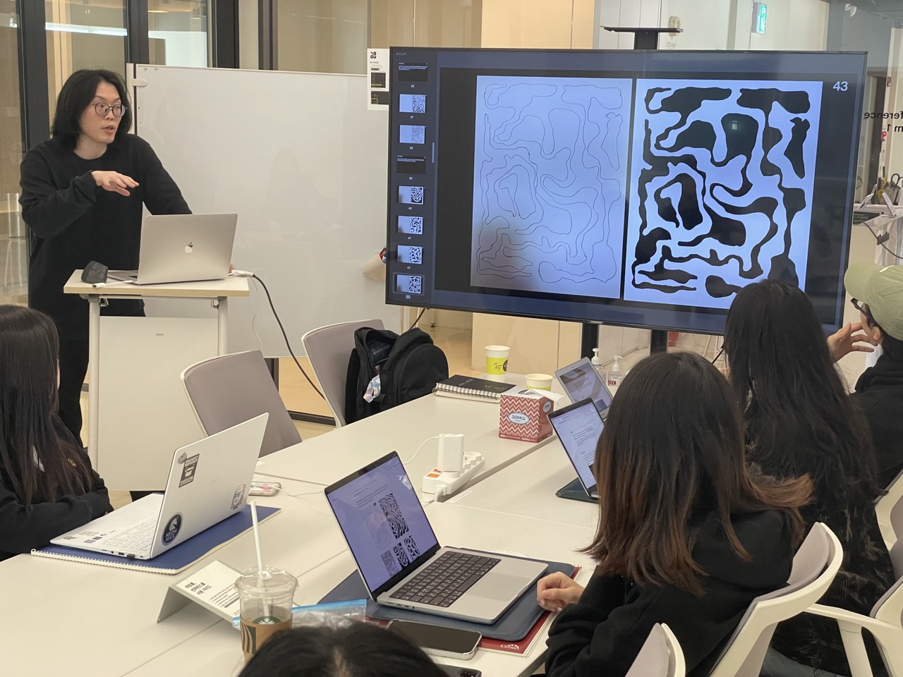
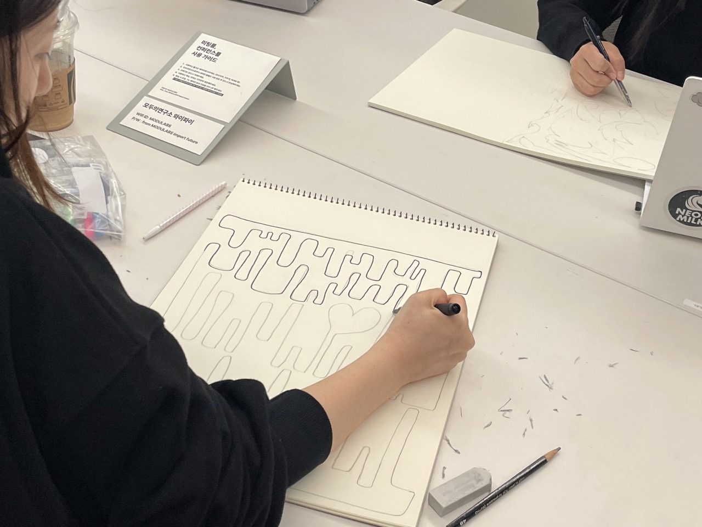
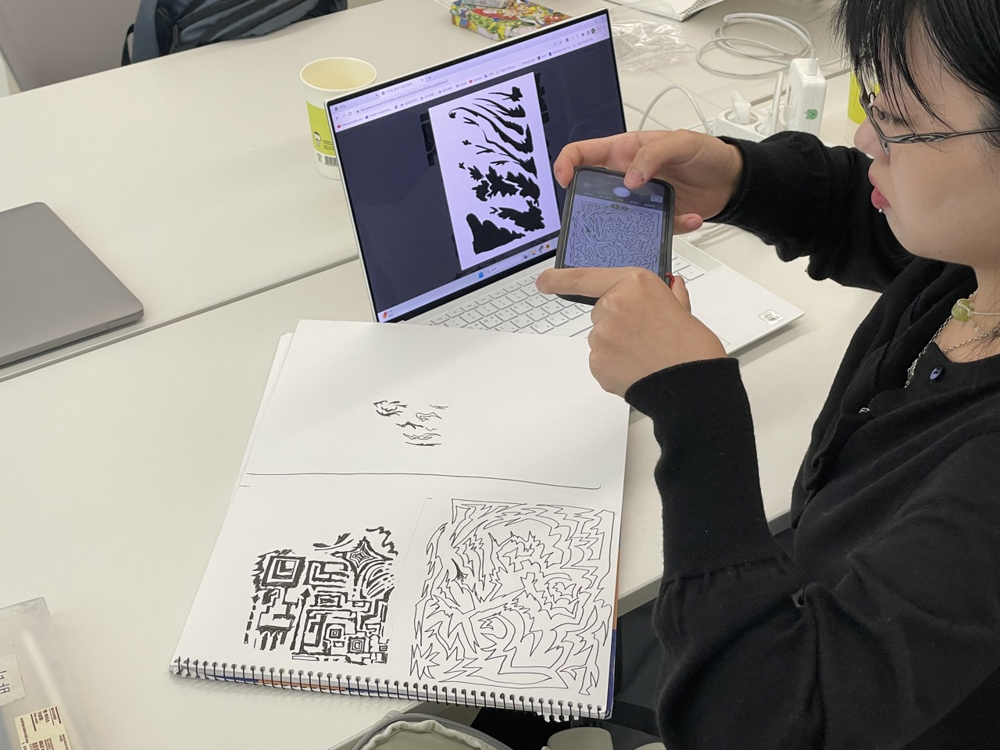
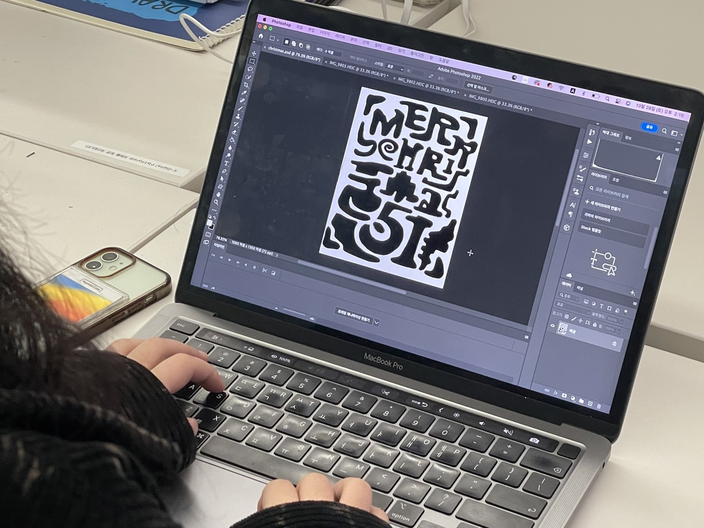
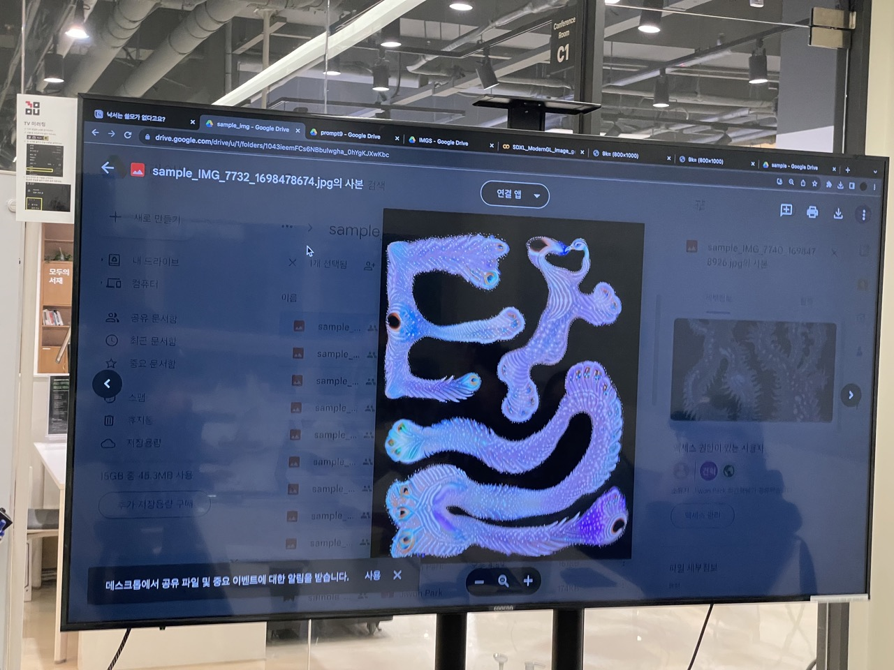
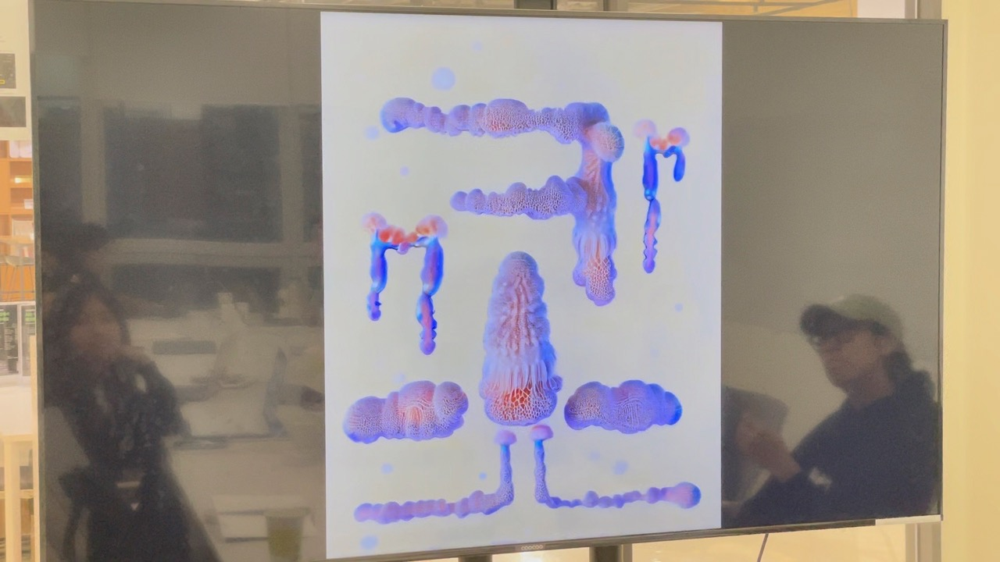

“제너러티브”하다는 것은 결과물에 도달하기 위해 사용한 일련의 도구들로 정의될까요? 혹은 결과물이 “제너러티브”한 느낌을 가지고 있다면 과정과 무관하게 “제너러티브”하다고 얘기할 수 있을까요? 일련의 과정을 통해 결과물을 만들어내면서 이에 대해 가볍게 고민해보는 워크샵입니다.
먼저, 느슨한 규칙으로 정의된 덩어리들을 직접 손으로 그려서 추상적인 낙서를 그려봐요. 이것을 사진을 찍거나 스캔하여 컴퓨터로 옮겨서 포토샵에서 흑백 이미지로 가공하고, 이 이미지와 머신러닝 모델을 활용해 코랩에서 새로운 이미지를 생성 해봅니다.






[ 진행자 ]
최건혁 작가 @ch_gnhk
[ 장소 ]
모두의연구소 강남캠퍼스
[ 일정 ]
2023년 10월 28일 오후 1시 ~ 오후 6시
[ 내용 ]
“제너러티브”하다는 것은 결과물에 도달하기 위해 사용한 일련의 도구들로 정의될까요? 혹은 결과물이 “제너러티브”한 느낌을 가지고 있다면 과정과 무관하게 “제너러티브”하다고 얘기할 수 있을까요? 일련의 과정을 통해 결과물을 만들어내면서 이에 대해 가볍게 고민해보는 워크샵입니다.
먼저, 느슨한 규칙으로 정의된 덩어리들을 직접 손으로 그려서 추상적인 낙서를 그려봐요. 이것을 사진을 찍거나 스캔하여 컴퓨터로 옮겨서 포토샵에서 흑백 이미지로 가공하고, 이 이미지와 머신러닝 모델을 활용해 코랩에서 새로운 이미지를 생성 해봅니다.
[ 진행시간 ]
- 13:00 - 13:30 워크샵 소개
- 13:30 - 15:00 그림 그리기 및 포토샵으로 이미지 가공하기
- 15:00 - 17:30 코랩으로 이미지 가공하고 생성하기
- 17:30 - 18:00 마무리
[ 워크샵 구성 ]
- 간단한 일러스트레이션 그리기
- 포토샵으로 이미지 흑백으로 가공하기
- ModernGL 활용해서 이미지 가공하기
- 스테이블 디퓨전을 활용해서 이미지 생성하기
[ 키워드 ]
제너러티브 아트, 일러스트레이션, AI 아트, 크리에이티브 코딩
[ 인원 ]
10명
[ 준비물 ]
- 노트북
- 핸드폰 (이미지 촬영용)
- 필기구 (연필, 지우개, 볼펜, 너무 두껍지 않은 마커)
- A5 이상 크기의 줄 없는 스케치북
- 포토샵
- 구글계정, 크롬 브라우저 (코랩, 구글 드라이브 사용)
[ 참여조건 ]
- 텍스트 기반 프로그래밍 문법에 대한 기본적인 이해
- 포토샵 사용 경험